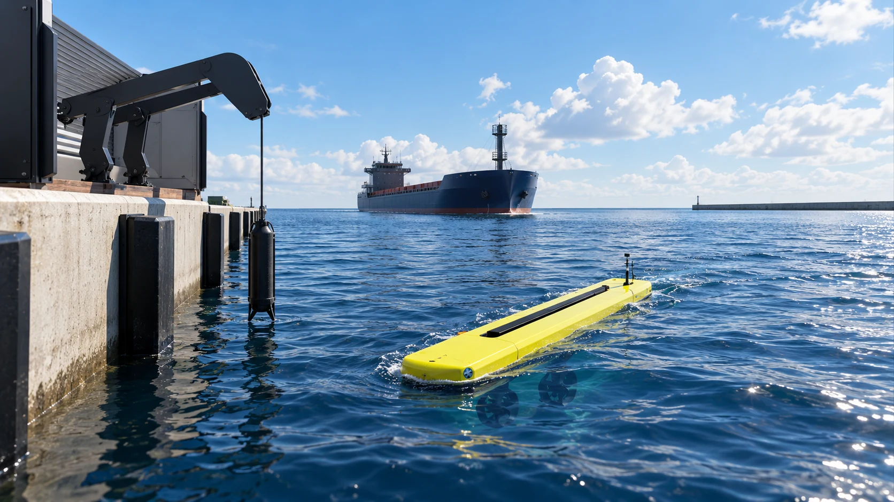

Direct command
Thrust magnitude and direction presented through an operator interface aligned with the manoeuvre.
Port operations
Towbot is designed to give bridge teams and pilots directly commanded thrust at the assisted vessel—without a towing line for the selected operation.
The operational case
A hull-attached manoeuvring unit can change thrust direction quickly, reduce towline handling and support precise low-speed control.

Is the vessel interface compatible? Where should thrust be applied? What is the wind, current and interaction load? How is the Towbot launched, recovered and charged? Who has command authority? These questions define the configuration and operating envelope.
Control philosophy
Towbot supports supervised remote and autonomous-assisted functions, with operator override, emergency stop and loss-of-link behaviour designed into the control case.
Thrust magnitude and direction presented through an operator interface aligned with the manoeuvre.
Camera, lighting, sensor, position and system-health information available to the designated operator.
Authenticated control, restricted access, logged events and deterministic behaviour under defined faults.
Take the next step
Describe the berthing, unberthing or confined-water move and the assistance currently used.
Request an application assessment ↗